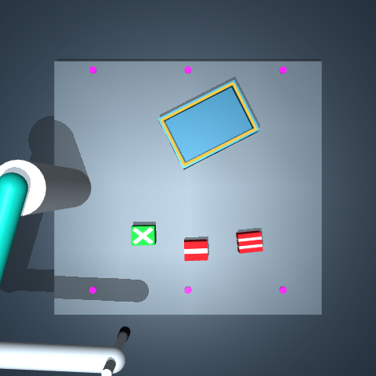
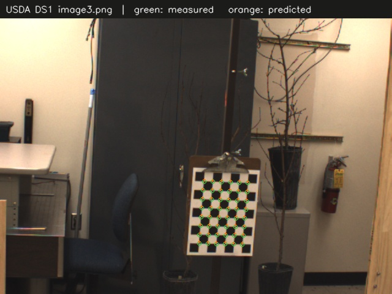

직무별 검증
지원자가 직접 실행한 피킹 복구 실험과 Codex가 추가 검증한 실물 사진·보정·주행·설비 연동 기록입니다.
실패 원인에 따라 운반 높이 선택
지원자는 경로 차단을 감지한 재시도에서만 높이를 0.40 m로 올리고, 흡착 실패 뒤에는 0.30 m를 유지하도록 변경했습니다. 아래 두 작업은 모두 두 번째 시도에서 배치를 완료했습니다.
| 개발 seed 200 · 재계획 정책 | 수정 전 | 수정 후 |
|---|---|---|
| 경로 차단 | 19.690초 | 19.690초 |
| 보정 오차로 첫 흡착 실패 | 26.935초 | 24.405초 |
다섯 작업에서 충돌·낙하·오배치는 전후 모두 0건이었습니다. Codex가 추가 개발 seed 201~209로 재현한 45쌍에서도 종료 상태가 같았습니다.
실물 포장 사진에서 품목 판별
Grocery Store Dataset의 휴대전화 촬영 사진으로 확인했습니다. 원래 줄무늬 모델과, 학습 사진 57장으로 실제 주스팩 두 종의 기준 임베딩을 등록한 실험을 같은 공식 시험 사진 781장에 적용했습니다.
| 설정 | 등록 상품 정답 | 미등록 상품을 잘못 수락 |
|---|---|---|
| 기존 줄무늬 모델 | 해당 라벨 사진 없음 | 2 / 781 |
| 주스팩 두 종 단순 등록 | 46 / 54 | 727 / 727 |
| 주스팩 등록 후 거리 기준 강화 | 3 / 54 | 36 / 727 |
단순 등록은 다른 포장을 전부 주스로 받아들였습니다. 별도 검증 사진으로 거리 기준을 정해 같은 포장을 다시 평가하자 오수락이 36장으로 줄었지만, 실제 등록 주스 51장도 거부했습니다. 두 설정 모두 오프라인 평가로 남겼습니다.
후속 시험에서 처음 평가한 과일·채소 50종은 모두 미등록이었습니다. 오수락은 기존 거리 기준에서 1,704장 중 1,539장, 강화한 기준에서 46장이었습니다. 원래 줄무늬 A/B 표식을 붙인 상자의 실물 정답률은 촬영 자료가 없어 미측정입니다.

RGB-D로 배치할 상자 찾기
상자의 위치·회전·크기를 바꾼 MuJoCo 장면 32개에서 상단 테두리와 내부 바닥 깊이로 입구를 추정했습니다. 중앙 위치 오차의 95백분위는 0.329 mm였습니다.
별도 피킹 작업 8건에서 관측한 입구로 물체를 배치했습니다. 상자 없음·두 개·맞닿은 두 개·입구 폭 부족의 네 조건에서는 접근 전에 보류했습니다. 시험 대상은 고정 카메라 아래의 파란색 직사각형 상자입니다.

손목에 장착한 카메라의 좌표 보정
USDA가 공개한 Denso 로봇과 Sony 카메라의 체크보드 기록 88쌍을 오프라인으로 분석했습니다. 66개 자세로 맞춘 변환을 고정한 뒤, 남겨 둔 22개 자세에서 코너 1,056개의 픽셀 위치를 예측했습니다.
보지 않은 자세의 픽셀 예측 RMS 오차는 5.156 px, 기준판 위치 일관성 RMS 오차는 11.820 mm였습니다. 별도 합성 실험에서는 한 회전축만 움직인 입력을 보정 불가로 판정했습니다.

라이다 지도 작성과 재방문 보정
시뮬레이터에서 바퀴와 36개 라이다 거리 측정을 기록한 뒤 사전 지도 없이 지도를 재구성했습니다. 같은 방에서 약 16.7 m를 이동한 세 기록의 위치 RMSE는 바퀴만 사용하면 0.616–0.664 m, 재방문 제약으로 자세를 보정하면 0.012–0.022 m였습니다.
기존 주행·피킹 임무는 알려진 지도와 EKF로 운행합니다. 여기에 표시한 지도는 별도 센서 기록으로 만든 오프라인 평가 결과입니다.

두 대의 이동로봇이 충전기 하나를 공유할 때
정상 시뮬레이션에서 첫 AMR이 충전 구역을 비운 뒤 77.80초에 두 번째 AMR이 진입 권한을 얻었습니다. 단자 전압·전류로 적산한 충전량은 각각 0.336370 Wh와 0.288264 Wh였습니다.
접점 열림, 낮은 전압, 전류 없음, 충전 중 전류 단절을 각각 시험했습니다. 네 경우 모두 첫 차량은 릴레이를 열고 정지했고 다음 차량은 대기했습니다.
C++ 제어기와 소프트웨어 PLC 통신
기존 C++ 클라이언트를 Awlsim의 S7 CPU와 독립 Modbus TCP 서버에 연결했습니다. 루프백 TCP 연결 18개로 13단계를 실행했고, PLC는 명령 쓰기 7건을 처리해 밸브 출력을 2번 바꿨습니다. 응답을 잃으면 상태를 다시 읽고, 명령 도달을 확인할 수 없으면 보류하는 동작을 기록했습니다.